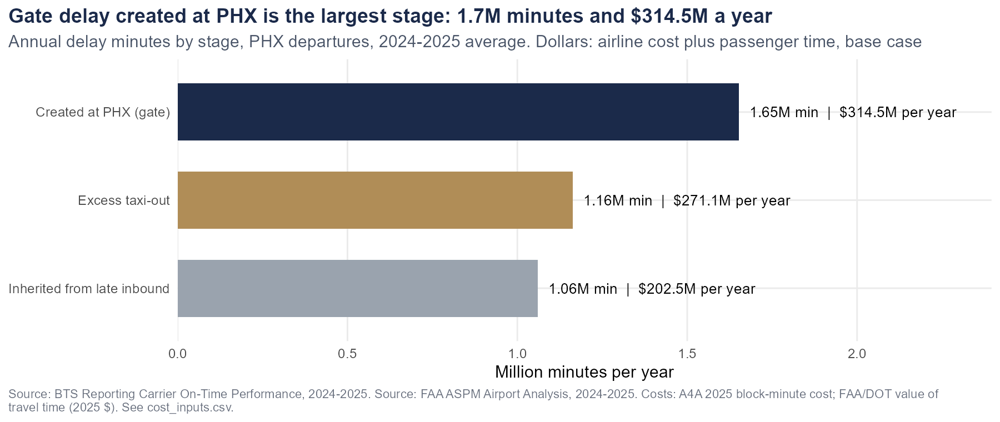
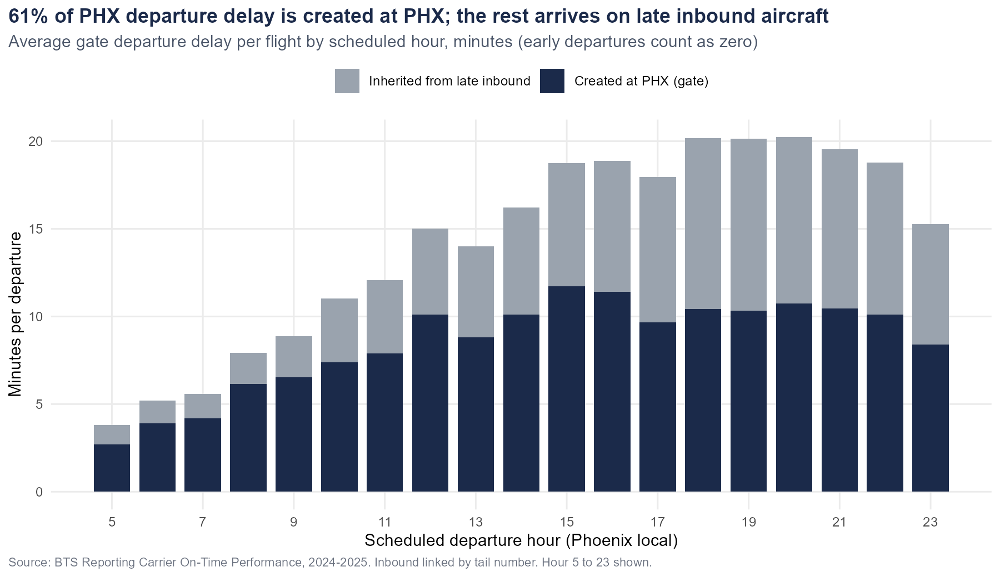
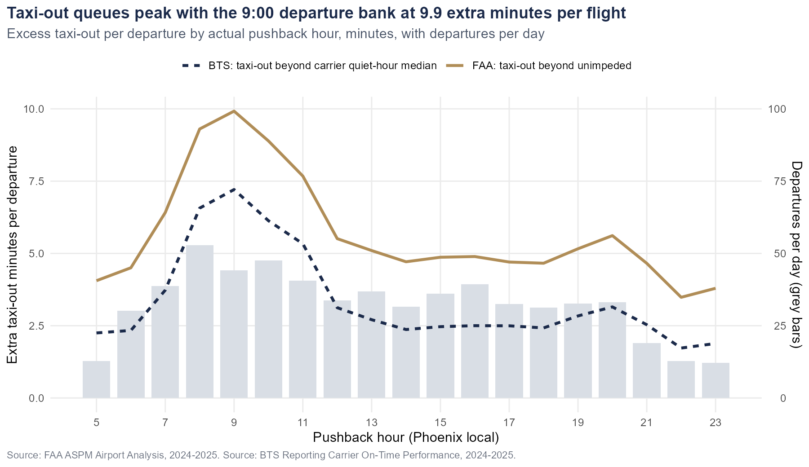
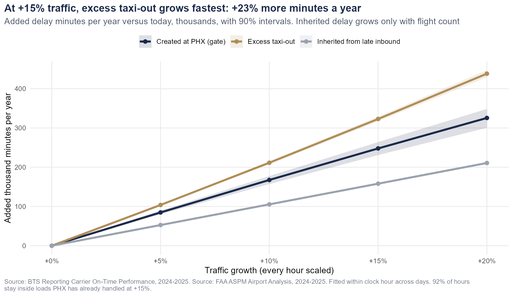

Where PHX departures lose time, and what breaks first as traffic grows
Phoenix Sky Harbor treated as a consulting client, using public BTS, FAA, NOAA and TSA data for 2024 and 2025. By Jake Moore.
Where is time lost, and what is the best fix?
The morning departure bank's taxi queue holds the most recoverable value, about $95.8M a year, with 68% of it in the 7 to 11 AM pushback window.
What degrades first at +15% traffic?
Excess taxi-out degrades first: at +15% traffic its annual minutes rise 23.1% and its delay per flight rises 7.1%, while gate delay grows only with the number of flights.
Video
Key charts




Recommendation
Spread departures out of the 7 to 11 AM bank so the taxi queue shrinks. Southwest (33% of the bank's queue), American (33%), the FAA tower and PHX operations would act together. Value at stake: $95.8M a year in the base case, $318.9M in the high case. Holding aircraft at the gate alone saves only fuel and maintenance, about $19.7M a year, because passengers still leave late.
Limitations
- Scope starts at the gate. Curb, check-in, security waits and gate occupancy have no public data.
- BTS covers reporting carriers only, about 80% of PHX operations counted by the FAA in 2024-2025.
- TSA data is passenger counts only and implies nothing about wait times.
- Act 2 is a projection with today's runways, gates and procedures, and an even schedule increase by hour.
- Dollar inputs come from published A4A and FAA/DOT values; fix costs are not public, so dollars are recoverable value, not ROI.
Links
GitHub repo (link once published)Full report, PDF (link once published)Slide deck (link once published)
Every number on this page is generated by the project scripts from public data.